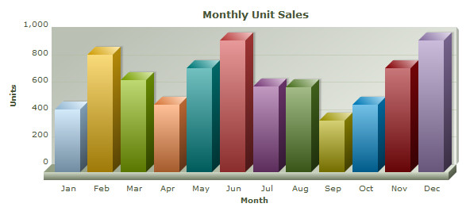

FusionCharts XT can effectively be used with PHP to plot dynamic data-driven charts. With FusionCharts PHP Class chart rendering becomes even easier. Let's see how to make use of FusionCharts PHP Class functions and create charts in few easy steps.
Even when used with PHP Class, FusionCharts XT internally uses JavaScript and XML/JSON to render the charts. The PHP Class code actually helps you output this JavaScript and XML/JSON. To aid your understanding of this section, we will recommend you to go through the following sections of documentation (if you have not already read them):
- Creating your first chart
- Changing chart type and size
- Configuring chart background, canvas, fonts, captions, data plot, labels, values, axis, legend, padding & margins, and number formatting
- Using XML or JSON as data source
- Using JavaScript API of FusionCharts
- Creating drill-down charts and LinkedCharts
- Exporting charts as images or CSV
- How FusionCharts XT work?
In this section, we will show a few basic examples to help you get started.
We will cover the following examples here:
- Creating a simple chart using FusionCharts PHP Class
- Creating a chart with external XML file created using FusionCharts PHP Class
- Creating a simple chart using JavaScript renderer
- Set managed printing for Mozilla browsers
Let's quickly see each of them. Before you proceed with the contents in this page, we strictly recommend you to please go through the "How FusionCharts XT works?" section.
All code discussed here is present in Download Package > Code > PHPClass > BasicExample folder.
In our code, we have used the charts and FusionCharts.js contained in Download Package > Code > FusionCharts folder. We have kept FusionCharts_Gen.php in Download Package > Code > PHPClass > Includes folder. When you run your samples, you need to make sure that all the files are in proper location.
Let's now start building our first chart. In this example, we will create a "Monthly Unit Sales" chart.
<?php //We have included ../Includes/FusionCharts_Gen.php, which contains FusionCharts PHP Class //to help us easily embed the charts. include("../Includes/FusionCharts_Gen.php"); ?> <HTML> <HEAD> <TITLE>FusionCharts XT - Simple Column 3D Chart</TITLE> <?php //You need to include the following JS file, if you intend to embed the chart using JavaScript. //Embedding using JavaScripts avoids the "Click to Activate..." issue in Internet Explorer //When you make your own charts, make sure that the path to this JS file is correct. //Else, you will get JavaScript errors. ?> <SCRIPT LANGUAGE="Javascript" SRC="../../FusionCharts/FusionCharts.js"></SCRIPT> </HEAD> <BODY> <?php //This page demonstrates the ease of generating charts using FusionCharts PHP Class. //For this chart, we have created a chart object used FusionCharts PHP Class //supply chart data and configurations to it and render chart using the instance //Here, we have kept this example very simple. # Create object for Column 3D chart $FC = new FusionCharts("Column3D","600","300"); # Setting Relative Path of chart SWF file. $FC->setSwfPath("../../FusionCharts/"); # Define chart attributes $strParam="caption=Monthly Unit Sales;xAxisName=Month;yAxisName=Units"; # Set chart attributes $FC->setChartParams($strParam); # Add chart data along with category names $FC->addChartData("462","label=Jan"); $FC->addChartData("857","label=Feb"); $FC->addChartData("671","label=Mar"); $FC->addChartData("494","label=Apr"); $FC->addChartData("761","label=May"); $FC->addChartData("960","label=Jun"); $FC->addChartData("629","label=Jul"); $FC->addChartData("622","label=Aug"); $FC->addChartData("376","label=Sep"); $FC->addChartData("494","label=Oct"); $FC->addChartData("761","label=Nov"); $FC->addChartData("960","label=Dec"); # Render chart $FC->renderChart(); ?> </BODY> </HTML>
What we did in this program?
- Included FusionCharts_Gen.php class and FusionCharts.js class.
- Created FusionCharts PHP class object $FC for a Column 3D chart with 600 pixels width and 300 pixels height.
- Set relative path of chart SWF file using setSwfPath.
- Stored delimiter separated chart attributes in a variable $strParam.
- Set these chart attributes to our chart using setChartParams.
- Added chart values and category names that are to be plotted on the Column 3D chart.
- Finally rendered the chart using renderChart.
Please go through the FusionCharts PHP Class API Reference section to know more about the functions used in the above code.
When you now run this page, you will see a chart like the one below.
If you do not see a chart like the one below, please follow the steps listed in the Debugging your Charts section of this documentation.

So, you just saw how simple it is to create a chart using FusionCharts PHP Class functions.
Now, we will create the same chart in a different way. Here, we will be using two different programs. One program creates the chart XML using FusionCharts PHP Class and the other uses this XML to render the chart using Data URL method. Code written inside Data.php file creates the XML and SimpleChart.php file uses the XML to render chart.
All code discussed here is present in Download Package > Code > PHPClass > BasicExample folder and Download Package > Code > PHPClass > BasicExample > Data folder.
Let's consider the code in Data.php file first. This code is similar like the code in the above example; the only difference is it does not render the chart but streams XML to SimpleChart.php file.
<?php //We have included ../../Includes/FusionCharts_Gen.php - FusionCharts PHP Class //to help us easily embed the charts. include("../../Includes/FusionCharts_Gen.php"); ?> <?php //This page demonstrates the ease of generating charts using FusionCharts PHPClass. //We created a FusionCharts object instance //Set chart values and configurations and returns the XML using getXML() function //and write it to the response stream to build the XML //Here, we have kept this example very simple. # Create column 3d chart object $FC = new FusionCharts("column3D","600","300"); # Set Relative Path of SWF file. $FC->setSWFPath("../../FusionCharts/"); # Define chart attributes $strParam="caption=Monthly Unit Sales;xAxisName=Month;yAxisName=Units;showLabels=1"; # Set chart attributes $FC->setChartParams($strParam); #add chart data values and category names $FC->addChartData("462","Label=Jan"); $FC->addChartData("857","Label=Feb"); $FC->addChartData("671","Label=Mar"); $FC->addChartData("494","Label=Apr"); $FC->addChartData("761","Label=May"); $FC->addChartData("960","Label=Jun"); $FC->addChartData("629","Label=Jul"); $FC->addChartData("622","Label=Aug"); $FC->addChartData("376","Label=Sep"); $FC->addChartData("494","Label=Oct"); $FC->addChartData("761","Label=Nov"); $FC->addChartData("960","Label=Dec"); //set content type as XML header('Content-type: text/xml'); #Return the chart XML for Column 3D Chart print $FC->getXML(); ?>
What we did here:
- Included FusionCharts_Gen.php class and FusionCharts.js class.
- Created FusionCharts PHP class object $FC for a Column 3D chart with 600 pixels width and 300 pixels height.
- Set relative path of chart SWF file.
- Stored delimiter separated chart attributes in a variable $strParam.
- Set these chart attributes to our chart.
- Added chart data that are to be plotted on the Column 3D chart.
- Finally, returned the XML and wrote it to the response stream.
Let's now look at SimpleChart.php function:
<?php //We have included ../Includes/FusionCharts.php, which contains functions //to help us easily embed the charts. include("../Includes/FusionCharts.php"); ?> <HTML> <HEAD> <TITLE>FusionCharts XT - Simple Column 3D Chart using Data URL method</TITLE> <?php //You need to include the following JS file, if you intend to embed the chart using JavaScript. //Embedding using JavaScripts avoids the "Click to Activate..." issue in Internet Explorer //When you make your own charts, make sure that the path to this JS file is correct. //Else, you will get JavaScript errors. ?> <SCRIPT LANGUAGE="Javascript" SRC="../../FusionCharts/FusionCharts.js"></SCRIPT> </HEAD> <BODY> <?php //This page demonstrates the ease of generating charts using FusionCharts PHP Class. //For this chart, we have used a Data.php which uses FusionCharts PHP Class (contained in /Data/ folder) //This file will generate the chart XML and pass it to the chart //We will use FusionCharts PHP function - renderChart() to render the chart using the XML //For a head-start, we have kept this example very simple. //Create the chart - Column 3D Chart with data from Data/Data.xml echo renderChart("../../FusionCharts/Column3D.swf", "Data/Data.php", "", "myFirst", 600, 300, false, false); ?> </BODY> </HTML>
Steps involved in this function:
- Include the FusionCharts.js class.
- Call the renderChart() function with data from Data.php function.
Note: The renderChart() function used in this code is not the same with the one we used in the previous example, though they bear same name. This is FusionCharts PHP chart embedding function; please go through Using with PHP > Basic Examples to know more about it.
Here is the output. As you can see, the same chart has been created but in a different way.
FusionCharts XT allows you to create pure JavaScript-only charts that does not require Flash, hence enabling your chart in browsers where Flash is not supported like that of iPhone and iPad, etc. This is achieved by calling the setRenderer function in PHP Class before you render your chart. Using this function you need to set the current renderer to javascript.
We modify the sample code which we have already used in the above simple chart implementation and added the required method. The code snippet below shows the modification:
$FC = new FusionCharts("Column3D","600","300");
// set JavaScript renderer
$FC->setRenderer('javascript');
...
The resultant chart will look similar to the image shown below:

FusionCharts XT provides better-print feature for all Mozilla, WebKit, and Gecko based browsers like Firefox, Safari, etc. To enable this feature in PHP all you need to do is call the enablePrintManager function before rendering the chart. This will enable the print manager process print data from all the charts in a page and prepare the charts for better-quality printing. To read more on how print manager works, please go through this.
Note: Print Manager works only in browsers that supports canvas object.
The code below shows how you need to enable print manager through PHP Class. We again take the code from the simple chart implementation:
$FC = new FusionCharts("Column3D","600","300");
// Enable Print Manager
$FC->enablePrintManager(true);
...
Listening to Print Manager status using JavaScript
Print Manager takes a bit of time to prepare all charts present in a page for print. You can listen to Print Manager's Ready State event using FusionCharts JavaScript class. Once the charts are ready, which can be tracked by listening to an event raised by the Print Manager, you can use browser's File → Print menu, JavaScript's native window.print() function or Print Manager's advanced function - managedPrint(). The JavaScript code below shows how you can listen to the event and prepare for print:
<html>
...
<body>
<script type="text/javascript"><!--
FusionCharts.addEventListener (
FusionChartsEvents.PrintReadyStateChange ,
function (identifier, parameter) {
if(parameter.ready){
alert("Chart is now ready for printing.");
document.getElementById('printButton').disabled = false;
}
});
// --></script>
<input type="button" onclick="FusionCharts.printManager.managedPrint()"
value="Managed Print" disabled="disabled" id="printButton" >
...
</body>
</html>
In the above code we have:
- Added a JavaScript event-listener for the global event PrintReadyStateChange to the global JavaScript object - FusionCharts
- Added a "Managed Print" button which will call FusionCharts.printManager.managedPrint(). The button is disabled when loaded.
- When the event is fired, it provides the listener with event arguments. The parameters event argument contains a property ready. This returns true when the Print Manager is ready to print all charts in a page
- Hence, in this event we can show the information alert and also enable the button, which was disabled prior to this.
Now, if you try printing from File → Print menu or using a button or function that call the window.print() function. You can also click "Managed Print" button to print the chart.
- Once a chart is rendered it silently gathers all the image data of the present state of the chart
- It converts the image data into image using canvas HTML object
- It hides the canvas image below the chart
- When print is invoked, a parallel CSS based print media layout (using @media print ) is created
- In this print media layout the Flash chart is hidden and the canvas image is displayed
- This layout with the canvas image is sent to the printer for print